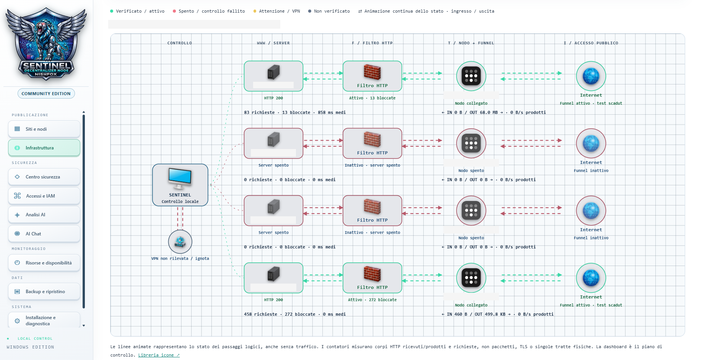
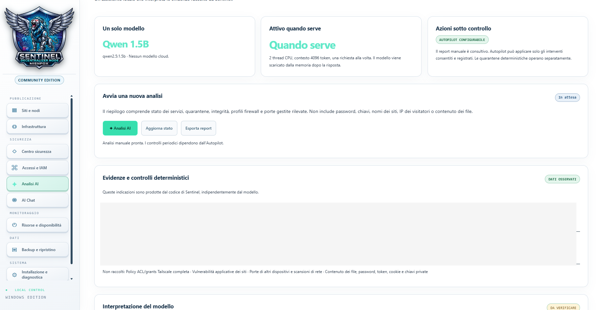
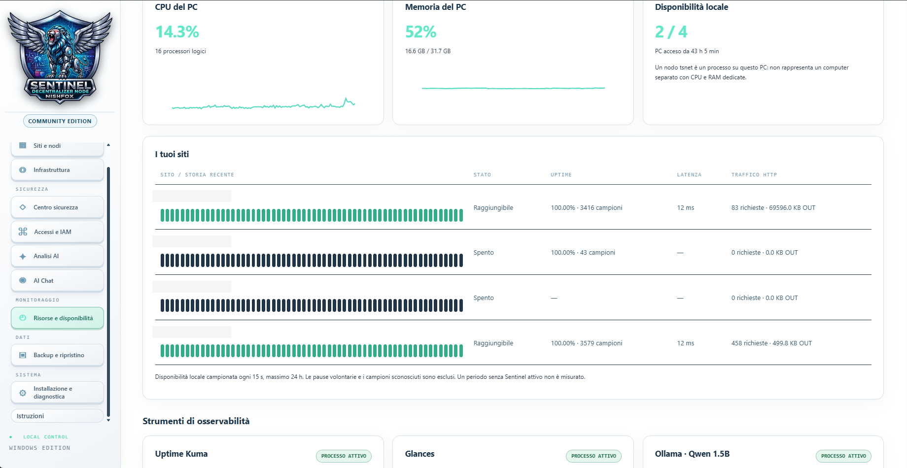

Sentinel Decentralized Node — Community Edition
🌐 Apri la vetrina del progetto
Sentinel è un centro di controllo per ospitare e pubblicare più siti statici dal proprio PC Windows. Ogni progetto ha una cartella, un server locale e un nodo Tailscale dedicato. I file vengono serviti dal PC e puoi scegliere quando rendere ciascun sito pubblico.
Windows · Self-hosted · Dashboard locale · AI opzionale
Apri il manuale illustrato · Leggi il manuale su GitHub
Video dimostrativi
English - 4K video · Italiano - video 4K
Guarda entrambi i video sulla vetrina
Ospita un sito esistente
- Se usi l’installer Windows, configura l’account amministratore nel wizard.
- Apri Sentinel dal collegamento o da
Avvia-Sentinel.bat. - Seleziona Nuovo sito / nodo per aggiungere un progetto di hosting. Copia nella cartella i file HTML, CSS, JavaScript e le immagini del sito già realizzato. Sostituisci la pagina di esempio con il tuo index.html.
- Premi Avvia e apri Anteprima.
- Per la pubblicazione, collega e autorizza il nodo dedicato su Tailscale, poi premi Pubblica.
- Apri l’indirizzo HTTPS riportato sulla scheda. Per verificare l’accesso esterno prova anche da un telefono su rete mobile.
Funzionalità
| Area | Cosa puoi fare |
|---|---|
| Siti | Gestire cartelle, server, anteprime, log e nodi dedicati |
| Pubblicazione | Attivare HTTPS tramite Tailscale Funnel e verificare DNS, TLS e risposta HTTP |
| Infrastruttura | Distinguere server locale, filtro HTTP, connessione del nodo e stato pubblico |
| Sicurezza | Limitare richieste e concorrenza, bloccare file nascosti, applicare quarantene HTTP e verificare l’integrità SHA-256 |
| Monitoraggio | Consultare risorse e disponibilità, con integrazioni opzionali CrowdSec, Glances e Uptime Kuma |
| Backup | Esportare ZIP e ripristinare in nuovi progetti spenti |
| Accessi | Proteggere dashboard, API e backup con un account amministratore |
| AI | Consultare dati ed estratti del codice con Qwen locale e ricevere opzioni di chiarimento |
| Autopilot | Eseguire verifiche periodiche e riattivare filtri HTTP secondo regole limitate e registrate |
| Interfaccia | Scegliere il tema chiaro o scuro e la lingua dei menu principali |
Guida nella dashboard
Sotto Installazione e diagnostica, il tag Istruzioni apre il manuale HTML illustrato nella dashboard. Il selettore traduce il testo nelle lingue supportate dal browser. Gli screenshot conservano la lingua originale.
Con Esegui controllo, Sentinel verifica nuovamente i componenti locali. Le righe si aggiornano una alla volta. Verde indica un controllo superato, giallo una verifica in sospeso e rosso un errore. Gli esiti del report salvato sono indicati separatamente.
Lingue
La vetrina offre un selettore con 11 lingue (Italiano, inglese, russo, francese, tedesco, cinese, spagnolo, arabo, hindi, singalese e tamil). Puoi scegliere la lingua dal menu appena apri il sito.
Il wizard chiede la lingua all'avvio. Le schermate standard sono disponibili in italiano, inglese, russo, francese, tedesco, spagnolo, arabo e tamil. I campi personalizzati di configurazione sono in italiano o inglese.
Offline e online
Con i componenti già installati puoi servire siti in locale, creare backup e usare Qwen offline. Il download iniziale dei componenti e del modello richiede Internet. Per pubblicare servono un PC acceso e connesso, un account Tailscale e le autorizzazioni della tailnet.
Installazione su Windows
Puoi avviare il wizard di Windows con un doppio clic oppure da PowerShell, con un comando unico o passo per passo. Guida di installazione.
Il wizard collega il PC a Tailscale se serve. Dalla dashboard colleghi e autorizzi il nodo dedicato al sito, poi premi Pubblica. La tailnet può chiedere di abilitare Funnel nella console Tailscale. Procedura completa.
Il pacchetto Windows attuale contiene un installer senza firma digitale. Windows può mostrare un avviso di SmartScreen. Verifica di aver scaricato il pacchetto dalla fonte ufficiale del progetto.
Documentazione
- Gestione dei siti e pubblicazione
- Sicurezza, monitoraggio e AI
- Collaudo e limiti
- Preparazione della pubblicazione su GitHub
- Vetrina del progetto
- Componenti di terze parti
Autore ed edizioni
La Community Edition è distribuita con licenza MIT. La futura Enterprise Edition sarà proprietaria e avrà condizioni separate.
Enterprise Edition · In sviluppo
Edizione proprietaria per team e organizzazioni. La prima fase è dedicata ai progetti condivisi tra PC, con sincronizzazione, permessi revocabili per utente e progetto, approvazione o pubblicazione diretta degli aggiornamenti, storico e ripristino.
Le estensioni previste includono SSO e 2FA aziendali, accesso tramite token, backup centralizzati, gestione container, terminale remoto, Web Studio, integrazione con VS Code e federazione tra sedi. Le priorità saranno definite in base alle esigenze dei primi clienti. Catalogo completo delle funzionalità previste.
Stato del progetto
Lo stress test registrato ha completato 30.000 richieste locali su sei siti temporanei. Una successiva esecuzione della suite ha registrato 24 test passati, 9 falliti e 1 saltato, con errori di accesso a loopback tra i fallimenti. La demo TEST-Sentinel ha completato la pubblicazione e i controlli DNS, TLS e HTTP dal PC host. Il collaudo su Windows pulito e la verifica di quel nodo da rete mobile restano aperti.
La Community Edition serve siti statici. Backend applicativi, PostgreSQL e autenticazione a due fattori sono possibili estensioni. Le traduzioni sono parziali. I filtri operano sul traffico HTTP applicativo. L’inferenza AI è consultiva e può produrre errori.
Perché sto creando Sentinel
Sono Nishfox. Voglio semplificare gli strumenti tecnici e favorire, dove possibile, soluzioni locali e offline che riducano la dipendenza dagli abbonamenti. La Community Edition è il mio contributo gratuito e open source. Per pubblicare sul web servono comunque Internet e le autorizzazioni Tailscale.
La Community è gratuita. Le ore di sviluppo e la bolletta, purtroppo, non hanno ancora trovato un piano free. 😄
Se il progetto ti è utile, puoi sostenerlo con una stella, feedback concreti o una condivisione.
Sostieni lo sviluppo
La Community Edition è gratuita e open source. Se ti è utile, puoi sostenere lo sviluppo con un contributo volontario tramite PayPal, dell'importo che preferisci. Anche una stella, feedback concreti o una condivisione sono preziosi.
Il contributo è facoltativo e non costituisce l'acquisto di prodotti o servizi.
Anteprima della dashboard



Creato da Nishfox · 2026